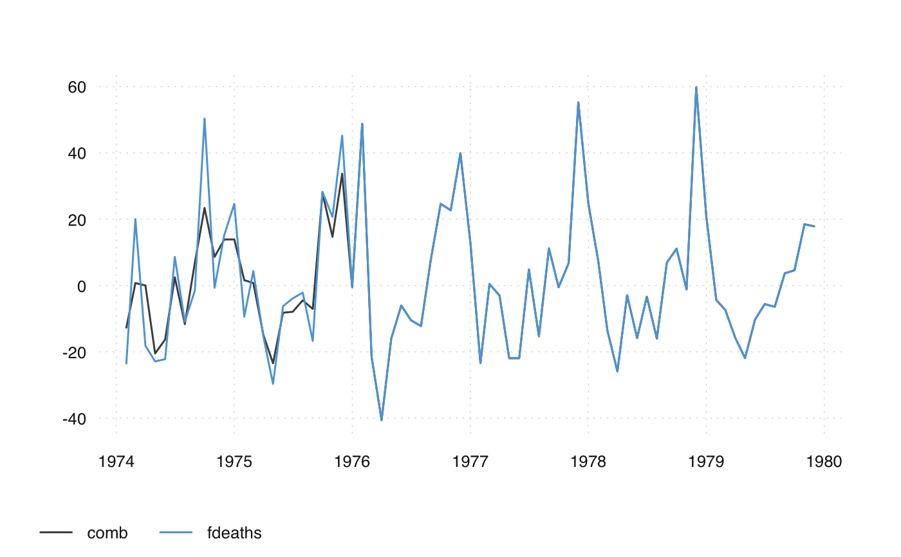

ts_bind.RdCombine time series to a new, single time series. ts_bind combines time
series as they are, ts_chain chains them together, using percentage change
rates.
ts_bind(...) ts_chain(...)
| ... | ts-boxable time series, objects of class |
|---|
A ts-boxable object of the same class as the input. If series of different classes are combined, the class of the first series is used (if possible).
ts_c to collect multiple time series
ts_bind(ts_span(mdeaths, end = "1975-12-01"), fdeaths)#> Jan Feb Mar Apr May Jun Jul Aug Sep Oct Nov Dec #> 1974 2134 1863 1877 1877 1492 1249 1280 1131 1209 1492 1621 1846 #> 1975 2103 2137 2153 1833 1403 1288 1186 1133 1053 1347 1545 2066 #> 1976 767 1141 896 532 447 420 376 330 357 445 546 764 #> 1977 862 660 663 643 502 392 411 348 387 385 411 638 #> 1978 796 853 737 546 530 446 431 362 387 430 425 679 #> 1979 821 785 727 612 478 429 405 379 393 411 487 574ts_bind(mdeaths, c(2, 2))#> Jan Feb Mar Apr May Jun Jul Aug Sep Oct Nov Dec #> 1974 2134 1863 1877 1877 1492 1249 1280 1131 1209 1492 1621 1846 #> 1975 2103 2137 2153 1833 1403 1288 1186 1133 1053 1347 1545 2066 #> 1976 2020 2750 2283 1479 1189 1160 1113 970 999 1208 1467 2059 #> 1977 2240 1634 1722 1801 1246 1162 1087 1013 959 1179 1229 1655 #> 1978 2019 2284 1942 1423 1340 1187 1098 1004 970 1140 1110 1812 #> 1979 2263 1820 1846 1531 1215 1075 1056 975 940 1081 1294 1341 #> 1980 2 2ts_bind(mdeaths, 3, ts_bind(fdeaths, c(99, 2)))#> Jan Feb Mar Apr May Jun Jul Aug Sep Oct Nov Dec #> 1974 2134 1863 1877 1877 1492 1249 1280 1131 1209 1492 1621 1846 #> 1975 2103 2137 2153 1833 1403 1288 1186 1133 1053 1347 1545 2066 #> 1976 2020 2750 2283 1479 1189 1160 1113 970 999 1208 1467 2059 #> 1977 2240 1634 1722 1801 1246 1162 1087 1013 959 1179 1229 1655 #> 1978 2019 2284 1942 1423 1340 1187 1098 1004 970 1140 1110 1812 #> 1979 2263 1820 1846 1531 1215 1075 1056 975 940 1081 1294 1341 #> 1980 3 2#> time value #> 1: 1949-01-01 112 #> 2: 1949-02-01 118 #> 3: 1949-03-01 132 #> 4: 1949-04-01 129 #> 5: 1949-05-01 121 #> --- #> 212: 1979-08-01 975 #> 213: 1979-09-01 940 #> 214: 1979-10-01 1081 #> 215: 1979-11-01 1294 #> 216: 1979-12-01 1341# numeric vectors ts_bind(12, AirPassengers, c(2, 3))#> Jan Feb Mar Apr May Jun Jul Aug Sep Oct Nov Dec #> 1948 12 #> 1949 112 118 132 129 121 135 148 148 136 119 104 118 #> 1950 115 126 141 135 125 149 170 170 158 133 114 140 #> 1951 145 150 178 163 172 178 199 199 184 162 146 166 #> 1952 171 180 193 181 183 218 230 242 209 191 172 194 #> 1953 196 196 236 235 229 243 264 272 237 211 180 201 #> 1954 204 188 235 227 234 264 302 293 259 229 203 229 #> 1955 242 233 267 269 270 315 364 347 312 274 237 278 #> 1956 284 277 317 313 318 374 413 405 355 306 271 306 #> 1957 315 301 356 348 355 422 465 467 404 347 305 336 #> 1958 340 318 362 348 363 435 491 505 404 359 310 337 #> 1959 360 342 406 396 420 472 548 559 463 407 362 405 #> 1960 417 391 419 461 472 535 622 606 508 461 390 432 #> 1961 2 3ts_chain(ts_span(mdeaths, end = "1975-12-01"), fdeaths)#> Jan Feb Mar Apr May Jun Jul #> 1974 2134.0000 1863.0000 1877.0000 1877.0000 1492.0000 1249.0000 1280.0000 #> 1975 2103.0000 2137.0000 2153.0000 1833.0000 1403.0000 1288.0000 1186.0000 #> 1976 2055.2815 3057.4656 2400.9546 1425.5668 1197.7977 1125.4475 1007.5435 #> 1977 2309.8470 1768.5603 1776.5992 1723.0065 1345.1777 1050.4176 1101.3307 #> 1978 2132.9909 2285.7302 1974.8923 1463.0817 1420.2075 1195.1180 1154.9235 #> 1979 2199.9818 2103.5149 1948.0960 1639.9377 1280.8664 1149.5642 1085.2529 #> Aug Sep Oct Nov Dec #> 1974 1131.0000 1209.0000 1492.0000 1621.0000 1846.0000 #> 1975 1133.0000 1053.0000 1347.0000 1545.0000 2066.0000 #> 1976 884.2802 956.6304 1192.4384 1463.0817 2047.2425 #> 1977 932.5136 1037.0195 1031.6602 1101.3307 1709.6083 #> 1978 970.0285 1037.0195 1152.2438 1138.8457 1819.4734 #> 1979 1015.5824 1053.0973 1101.3307 1304.9831 1538.1115